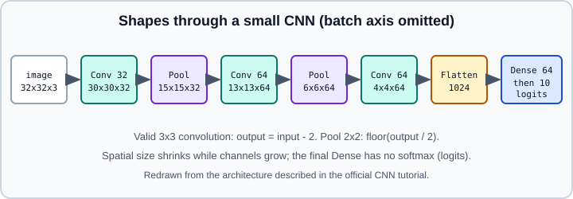

Image Classification with CNNs
|
This content was generated with the assistance of AI and should be verified against the official documentation before being relied on in production. |
This page walks through the standard workflow for classifying images with a convolutional network in Keras: load and normalize the data, define a small CNN, compile with the right loss, train, read the learning curves, fight overfitting with augmentation, dropout and batch normalization, evaluate on held-out data and predict on new images. The convolution arithmetic, the architectures and the theory are on Convolutional Neural Networks; here the focus is the TensorFlow and Keras mechanics. Building blocks are on Sequential and Functional Models and Core Keras Layers, data on Loading Images, Text and Audio from Disk, TensorFlow Datasets and Keras Preprocessing Layers. When you have little data, continue with Transfer Learning and Fine-Tuning. The PyTorch version of the same exercise is CNN tutorial in PyTorch.
It targets Python 3.13, TensorFlow 2.21 with Keras 3.15 (TensorFlow 2.22 is "upcoming"), and was checked against the official TensorFlow tutorials on 2026-10-30. Examples were run on Python 3.13 with TensorFlow 2.21 and Keras 3.15 (CPU) on 2026-10-31, with small synthetic stand-ins of the same shapes for CIFAR-10 and the flowers photos and fewer epochs, so the code paths were checked but not the accuracy. The accuracies quoted are those the official tutorials report for their runs; yours will differ with seeds, hardware and library versions.
Overview
An image classifier maps a batch of tensors of shape (batch, height, width, channels) to class scores. Keras uses channels-last by default, so a colour image is (H, W, 3). The pipeline is always the same:
-
get images as
float32tensors (or let the model convert them) with a known size; -
pass them through blocks of convolution and pooling, which shrink the spatial grid while the number of channels grows;
-
collapse the feature maps (flatten or global pooling) and finish with dense layers producing one score per class;
-
train with cross-entropy and Adam, watching a held-out validation set.

The figure is an original redraw of the architecture used in the official CNN tutorial. The shape arithmetic: a valid (no padding) convolution with kernel k and stride 1 shrinks each spatial side by k - 1, and a 2x2 pooling halves it, rounding down, so \(32 \to 30 \to 15 \to 13 \to 6 \to 4\). With padding="same" and stride 1 the size is unchanged.
Example 1: a CNN for CIFAR-10
CIFAR-10 has 60,000 colour images of 32x32 pixels in 10 classes (50,000 for training and 10,000 for testing). Keras can download it directly.
import numpy as np
import keras
from keras import layers
(x_train, y_train), (x_test, y_test) = keras.datasets.cifar10.load_data()
print(x_train.shape, y_train.shape) # (50000, 32, 32, 3) (50000, 1)
x_train = x_train.astype("float32") / 255.0 # scale to [0, 1]
x_test = x_test.astype("float32") / 255.0
y_train = y_train.squeeze() # labels (N, 1) -> (N,)
y_test = y_test.squeeze()
model = keras.Sequential([
keras.Input(shape=(32, 32, 3)),
layers.Conv2D(32, 3, activation="relu"),
layers.MaxPooling2D(2),
layers.Conv2D(64, 3, activation="relu"),
layers.MaxPooling2D(2),
layers.Conv2D(64, 3, activation="relu"),
layers.Flatten(),
layers.Dense(64, activation="relu"),
layers.Dense(10), # no softmax: the model outputs logits
])
model.summary() # about 122,570 trainable parameters
model.compile(
optimizer="adam",
loss=keras.losses.SparseCategoricalCrossentropy(from_logits=True),
metrics=["accuracy"],
)
history = model.fit(
x_train, y_train,
epochs=10,
batch_size=64,
validation_split=0.1, # hold 10% of training data out; keep the test set untouched
)
test_loss, test_acc = model.evaluate(x_test, y_test, verbose=0)
print(f"test accuracy {test_acc:.3f}")The official tutorial trains the same architecture for 10 epochs and reports roughly 72% accuracy on held-out data (about 79% on the training set by the last epoch), a gap that already signals overfitting. It uses the test set as the per-epoch validation set for simplicity; the example above uses validation_split so the test number stays an honest, one-time estimate.
Key choices:
-
keras.Input(shape=...)as the first element of aSequentialis the supported way to give the model its input shape; the tutorial warns against passinginput_shapeto the first layer. -
Conv2D(32, 3)is shorthand for a 3x3 kernel; strides default to 1 and padding to"valid". -
The last
Densehas no activation. Withfrom_logits=Truethe loss applies the softmax internally, which is more numerically stable than a softmax layer followed by a plain loss. Usingfrom_logits=False(the default) with logits silently trains worse. -
SparseCategoricalCrossentropytakes integer labels of shape(batch,). With one-hot labels useCategoricalCrossentropy; with 0/1 multi-label targets useBinaryCrossentropy. See Losses and Information Theory and Losses. -
CIFAR-10 labels come as an
(N, 1)array; squeeze it or index carefully when plotting. -
Do not tune on the test set: every decision made by looking at it leaks information.
Reading the training curves
import matplotlib.pyplot as plt
h = history.history
epochs = range(1, len(h["loss"]) + 1)
fig, (ax1, ax2) = plt.subplots(1, 2, figsize=(10, 3.5))
ax1.plot(epochs, h["accuracy"], label="train")
ax1.plot(epochs, h["val_accuracy"], label="validation")
ax1.set_title("accuracy"); ax1.legend()
ax2.plot(epochs, h["loss"], label="train")
ax2.plot(epochs, h["val_loss"], label="validation")
ax2.set_title("loss"); ax2.legend()
plt.show()A widening gap between training and validation accuracy, or validation loss that rises while training loss falls, indicates overfitting; the remedies below address it. If both curves are poor, the model underfits: add capacity, train longer or raise the learning rate. The theory is in Generalization and Regularization and the practical checklist in Deep Learning Tuning Playbook. Live curves are available through TensorBoard; see TensorBoard.
Example 2: classifying photos stored in folders
Real projects start from files on disk. keras.utils.image_dataset_from_directory expects one sub-directory per class and returns a tf.data.Dataset of (images, labels) batches. The official flowers tutorial uses 3,670 photos in five classes.
import pathlib
import tensorflow as tf
import keras
from keras import layers
data_dir = pathlib.Path("flower_photos") # flower_photos/daisy/..., flower_photos/roses/..., etc.
img_size = (180, 180)
batch_size = 32
common = dict(
validation_split=0.2,
seed=123, # the same seed keeps the two subsets disjoint
image_size=img_size,
batch_size=batch_size,
)
train_ds = keras.utils.image_dataset_from_directory(data_dir, subset="training", **common)
val_ds = keras.utils.image_dataset_from_directory(data_dir, subset="validation", **common)
class_names = train_ds.class_names # alphabetical order of the sub-directories
num_classes = len(class_names)
AUTOTUNE = tf.data.AUTOTUNE
train_ds = train_ds.cache().shuffle(1000).prefetch(AUTOTUNE) # shuffle the training data only
val_ds = val_ds.cache().prefetch(AUTOTUNE)Notes:
-
The labels default to integer class indices (
label_mode="int"); use"categorical"for one-hot labels and match the loss. -
validation_splitneedssubsetand the sameseedon both calls. If you create the validation set from a second directory, skip these arguments. -
.cache()keeps decoded images in memory after the first epoch (or pass a file name to cache on disk), and.prefetch(AUTOTUNE)overlaps data preparation with training. Put.shuffleafter.cacheso the order changes every epoch. More on this in tf.data Performance. -
class_namesmust be read before.cache()and.prefetch(), because those transformations return datasets without that attribute. -
Folders with corrupt or unusual images fail at decode time; remove them or filter the files first.
-
Images are returned as
float32in the range 0 to 255 unless you change the dtype, so rescale inside the model.
Adding preprocessing, augmentation and dropout
Data augmentation creates plausible variations of the training images (flipped, rotated, zoomed) so the network cannot memorize pixel-exact examples. Dropout randomly zeroes a fraction of activations during training. Both are active only in training mode, and both are standard Keras layers.
data_augmentation = keras.Sequential([
layers.RandomFlip("horizontal"),
layers.RandomRotation(0.1),
layers.RandomZoom(0.1),
], name="augmentation")
model = keras.Sequential([
keras.Input(shape=(180, 180, 3)),
data_augmentation, # training only
layers.Rescaling(1.0 / 255), # [0, 255] -> [0, 1]
layers.Conv2D(16, 3, padding="same", activation="relu"),
layers.MaxPooling2D(),
layers.Conv2D(32, 3, padding="same", activation="relu"),
layers.MaxPooling2D(),
layers.Conv2D(64, 3, padding="same", activation="relu"),
layers.MaxPooling2D(),
layers.Dropout(0.2),
layers.Flatten(),
layers.Dense(128, activation="relu"),
layers.Dense(num_classes), # logits
])
model.compile(
optimizer="adam",
loss=keras.losses.SparseCategoricalCrossentropy(from_logits=True),
metrics=["accuracy"],
)
history = model.fit(train_ds, validation_data=val_ds, epochs=15)The tutorial reports that the version without augmentation and dropout reaches only about 60% validation accuracy while training accuracy keeps rising, and that adding both brings the curves closer together. Placing Rescaling and the augmentation inside the model means exported models accept raw 0-255 images, and the GPU does the work; moving them into dataset.map instead is an alternative that offloads the CPU, with the trade-offs in Keras Preprocessing Layers. Also use augmentations that preserve the label: a horizontal flip suits flowers but not digits or text.
Modernising the architecture
The plain stack above is easy to read but dated. Three well-supported changes usually help:
def conv_block(x, filters):
x = layers.Conv2D(filters, 3, padding="same", use_bias=False)(x)
x = layers.BatchNormalization()(x) # normalize activations; bias is redundant before it
x = layers.Activation("relu")(x)
return x
inputs = keras.Input(shape=(180, 180, 3))
x = layers.Rescaling(1.0 / 255)(inputs)
x = conv_block(x, 32)
x = layers.MaxPooling2D()(x)
x = conv_block(x, 64)
x = layers.MaxPooling2D()(x)
# Residual connection: add a shortcut around two convolutions
shortcut = layers.Conv2D(128, 1, padding="same")(x) # match the channel count
y = conv_block(x, 128)
y = layers.Conv2D(128, 3, padding="same")(y)
x = layers.add([shortcut, y])
x = layers.Activation("relu")(x)
x = layers.GlobalAveragePooling2D()(x) # replaces Flatten + big Dense layer
x = layers.Dropout(0.3)(x)
outputs = layers.Dense(num_classes)(x)
model = keras.Model(inputs, outputs, name="small_resnet")
model.compile(
optimizer="adam",
loss=keras.losses.SparseCategoricalCrossentropy(from_logits=True),
metrics=["accuracy"],
)-
BatchNormalizationstabilizes and speeds up training; it behaves differently in training and inference (batch statistics versus moving averages), which matters again when fine-tuning pretrained models. -
GlobalAveragePooling2DreplacesFlattenfollowed by a largeDenselayer, which removes most of the parameters and makes the model independent of the input size. -
Skip connections are written with the functional API (see Sequential and Functional Models); the theory of residual blocks and depthwise-separable convolutions is in Convolutional Neural Networks.
-
For real accuracy on small datasets, a pretrained backbone fine-tuned on your data almost always beats a network trained from scratch; see Transfer Learning and Fine-Tuning and Pre-trained Models with KerasHub.
Callbacks that matter for image training
callbacks = [
keras.callbacks.EarlyStopping(monitor="val_loss", patience=4, restore_best_weights=True),
keras.callbacks.ModelCheckpoint("best.keras", monitor="val_accuracy", save_best_only=True),
keras.callbacks.ReduceLROnPlateau(monitor="val_loss", factor=0.5, patience=2),
keras.callbacks.TensorBoard(log_dir="logs/cnn"), # needs pip install tensorboard
]
history = model.fit(train_ds, validation_data=val_ds, epochs=50, callbacks=callbacks)Source: https://keras.io/api/callbacks/
The saved .keras file contains architecture, weights and optimizer state (see Saving Keras Models). All of these are explained on Callbacks; learning-rate schedules are on Optimizers and Learning-Rate Schedules.
Evaluation and prediction
loss, acc = model.evaluate(val_ds, verbose=0)
# Predict a single new image
img = keras.utils.load_img("sunflower.jpg", target_size=(180, 180))
arr = keras.utils.img_to_array(img) # (180, 180, 3) float32, range 0..255
batch = np.expand_dims(arr, axis=0) # (1, 180, 180, 3)
logits = model.predict(batch, verbose=0)
probs = keras.ops.softmax(logits, axis=-1) # convert logits to probabilities
best = int(np.argmax(probs[0]))
print(class_names[best], float(probs[0][best]))
# Confusion matrix over a whole dataset
y_true = np.concatenate([y.numpy() for _, y in val_ds])
y_pred = np.argmax(model.predict(val_ds, verbose=0), axis=-1)
cm = np.zeros((num_classes, num_classes), dtype=int)
for t, p in zip(y_true, y_pred):
cm[t, p] += 1-
The training pipeline’s
shufflemakespredictorder differ from label order; the example above evaluatesval_ds, which is not shuffled. For a shuffled dataset, collect predictions and labels in the same loop. -
tf.nn.softmaxalso works (the official tutorial uses it);keras.ops.softmaxis the backend-neutral spelling, see Keras Multi-Backend. -
Report more than accuracy when classes are imbalanced: precision, recall and per-class numbers from Metrics or from scikit-learn metrics.
-
The model must see images preprocessed exactly as in training. If
Rescalingis inside the model, feed raw 0-255 images; if you scaled in the pipeline, scale at inference too. -
After training you can convert the model for devices with LiteRT (the official flowers tutorial ends with such a conversion); see On-Device Inference with LiteRT.
Troubleshooting checklist
| Symptom | Likely cause |
|---|---|
Accuracy stays near 10% on CIFAR-10 (chance) |
Missing normalization, a learning rate too high, labels misaligned, or |
Loss is |
Learning rate too high, |
Validation much worse than training |
Overfitting: add augmentation, dropout, weight decay (see |
Shape error at |
Mismatched |
Training is slow and the GPU idles |
Input-bound pipeline; add |
Different accuracy on every run |
Random initialization, shuffling and augmentation; set seeds with |